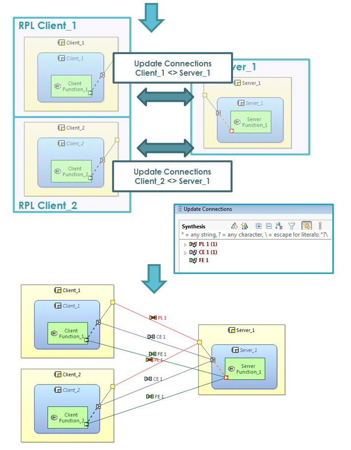

When a pair of REC elements is connected to each other via Component Exchanges/Functional Exchanges or Physical Links, it is possible to propagate/synchronize these elements (subsequently generalized as 'connections') to a related pair of RPL elements via the "Update Connections" command.
In the sample below, there is 2 REC (Client/Server) and some related RPL. REC have been connected with some connections. RPL doesn't have them.
By selecting one element from both RPL, Client 1 and Server 1, it is possible to propagate connections made through REC elements towards RPL elements. (resp. Client 2, Server 1)

To execute the command, select two RPL elements and choose "REC/RPL"->"Update Connections" from the context menu. This will open a wizard to configure the synchronization. The first tab displays the RPL pair between which connections should be synchronized from their originating REC pair. The second tab allows to chose a strategy that will be used to match existing connections between the pair of RPL elements against connections between the corresponding pair of REC elements. Currently two match strategies are available: 'By name' matches connections by their name. This works well if the connections between REC elements have the same name as the connections between RPL elements, and if these names are unique in the comparison context. The second strategy "Singleton Ports" works well if there is at most one connection associated to each port.
To start the synchronization press 'OK' in the wizard. The Diff/Merge comparison dialog will then show all connection differences between the REC/RPL pairs:
These differences can then be merged in both directions, i.e. it is possible to create an component exchange between a pair of RPL and then propagate this exchange to the corresponding pair of RECs, as well as to create a component exchange between a pair of REC and then propagate this exchange to any corresponding pair of RPL.